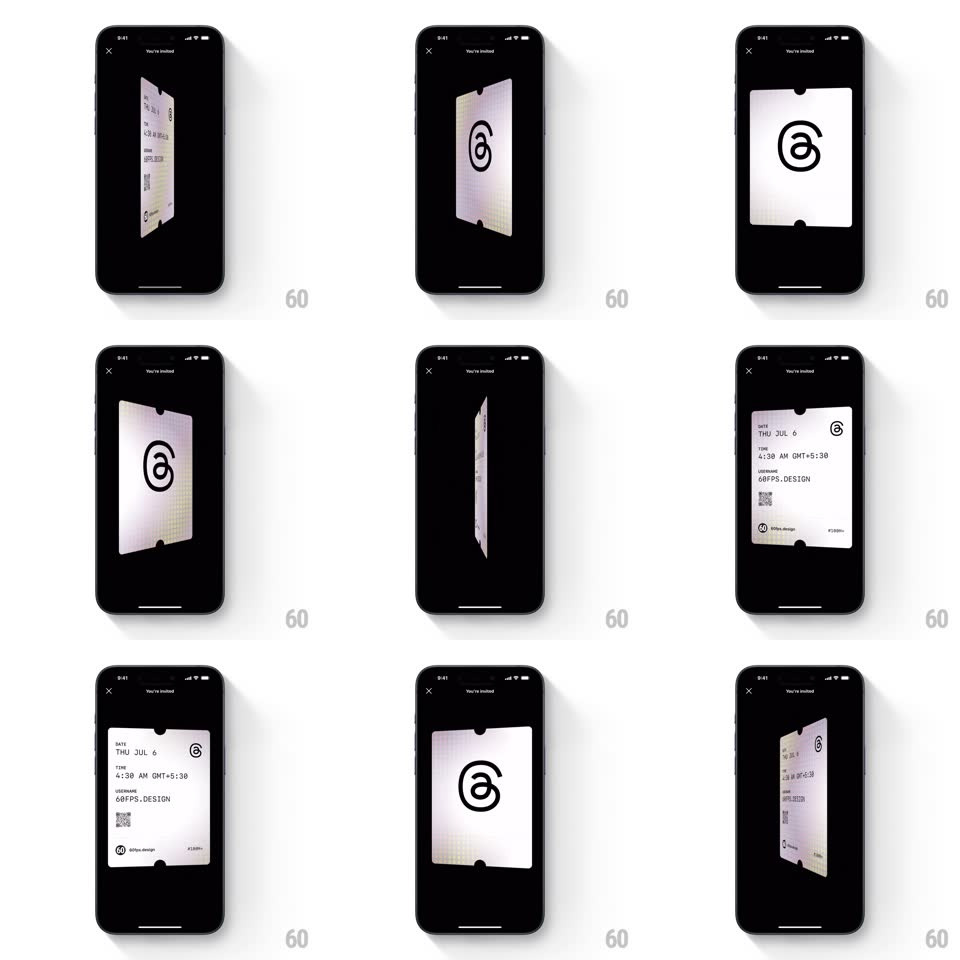

Media
Frame-by-frame

Rebuild this interaction 1:1: Threads' invite ticket - a holographic ticket card on a black "You're invited" screen that spins on its vertical axis (drag or auto) between a front face with the Threads logo and a back face with the event details and QR code.

Rebuild this interaction 1:1: Threads' invite ticket - a holographic ticket card on a black "You're invited" screen that spins on its vertical axis (drag or auto) between a front face with the Threads logo and a back face with the event details and QR code.
## Integration
Integration: stack-agnostic spec - springs given as stiffness/damping, timed motions as duration + curve; map every value to your framework and animation library of choice.
## Scene
A black modal ("You're invited" title, X close top-left). The ticket floats center: front face is a light holo ticket with the black Threads @ logo and punched notches on the edges; back face carries the details - DATE THU JUL 6, TIME 4:30 AM GMT+5:30, USERNAME 60FPS.DESIGN, a QR code, and small footer logos.
## Motion spec
Pattern: 3D card flip with holo shimmer.
- Idle: the ticket slowly oscillates (rotateY +/- 25deg, 3s loop) with a holographic sheen sweeping across the face as it turns (a gradient highlight tied to the angle).
- Drag horizontally: the ticket tracks the finger 1:1 in rotateY with perspective (~1000px); flicking adds angular momentum.
- Release: the ticket settles to the nearest face (spring ~260/16, gentle overshoot past 0/180deg, 600ms); past 90deg it completes to the back face.
- Mid-spin (edge-on), the ticket thins to a sliver and the two faces swap visibility exactly at 90deg.
- The holo shimmer intensifies at glancing angles and flattens head-on.
## Calibration
- Use a real perspective transform - a flat scaleX flip kills the effect.
- The ticket casts a soft floor shadow that scales with the tilt.
## Reduced motion
Faces crossfade on tap; no idle oscillation.
## Don't miss
- The punched ticket notches on the side edges - it's a physical ticket, not a plain card.
- The back face's type is mirrored-correct after the flip (each face is its own texture).